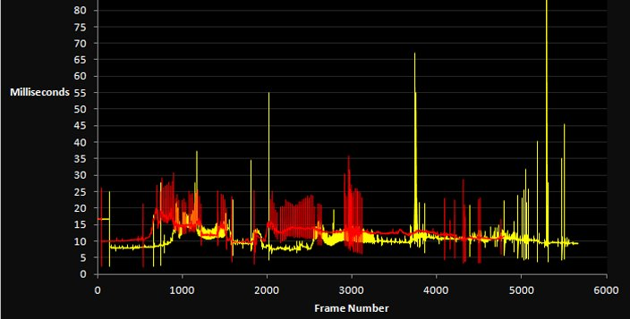
Il profiling viene spesso sottovalutato come processo continuo, considerato come qualcosa di simile a una fase finale prima del rilascio, affine alla lucidatura o alla caccia ai bug — e in senso ampio somiglia effettivamente alla caccia ai bug, ma non si tratta solo di trovare i colli di bottiglia nel codice e sistemarli qui e ora; è spesso una filosofia di sviluppo a sé stante che contiene diverse scuole con propri principi che differiscono parecchio tra loro. E senza una profonda comprensione di "come si fa il profiling correttamente" è impossibile realizzare un gioco che giri in modo accettabile su una "patata".
Comincio da una domanda fondamentale: cos'è un gioco dal punto di vista dell'ingegneria del software? In senso ampio, un gioco è un sistema soft real-time, il che significa che tutti i processi che vi accadono — dagli eventi di gioco come il giocatore che preme i tasti o i nemici che appaiono sullo schermo, passando per la logica di gioco che definisce le regole di interazione tra gli oggetti e lo stato del mondo di gioco, la fisica, le collisioni, e finendo con il rendering — devono avvenire entro un tempo rigorosamente definito, e questo vincolo è assoluto e non discutibile, altrimenti otteniamo un gameplay "fiacco".
Questo distingue moltissimo i giochi dalla maggior parte degli altri tipi di software, dove un piccolo ritardo di qualche millisecondo non è così percepibile o non è affatto critico per l'esperienza dell'utente. Hai aperto questo articolo e il tuo browser ha caricato questa pagina un secondo più lentamente di quanto avrebbe potuto, perché io, come al solito, ho inserito una grande immagine di copertina, ma tu come utente molto probabilmente non l'hai nemmeno notato. Oppure l'editor di Habr in cui sto scrivendo questo articolo in questo momento, che salva il documento un secondo più lentamente di quanto potrebbe — questo non influisce assolutamente sul lavoro e non ci hai mai nemmeno pensato.
Ma se un gioco perde anche solo un singolo frame e invece di 16,6 millisecondi ne impiega 30 o più, il giocatore nota il lag nell'animazione, e questo rovina l'impressione del gioco. Di conseguenza, se aggiungiamo qualcosa al codice di gioco, cambiamo qualcosa negli algoritmi o nei contenuti, dobbiamo tenerlo sotto controllo in modo rigoroso per non introdurre problemi di prestazioni che distruggono l'esperienza di gioco.
L'evoluzione delle aspettative
In generale, quando si tratta di quale metrica di alto livello si possa usare per valutare le prestazioni di un gioco, sono naturalmente i frame al secondo (i cari-al-cuore 60 fps), che mostrano quante volte al secondo il gioco aggiorna l'immagine sullo schermo. Per quanto riguarda alcuni dei giochi più semplici, dove non ci serve una reazione particolarmente rapida — per esempio le strategie a turni o i puzzle — venti o trenta frame al secondo possono bastare complessivamente, e i giocatori non noteranno davvero i problemi, perché non c'è bisogno di reagire a eventi che cambiano rapidamente sullo schermo, ma anche in un RTS super-lento arriveranno recensioni negative per i freeze.

Per quanto riguarda i giochi più complessi (in termini di lotta per gli fps), specialmente gli action, gli sparatutto o i giochi di corse, ci servono almeno 45, e meglio sessanta FPS, perché con un frame rate più basso il movimento stesso sullo schermo inizia a sembrare a scatti e sussultante, e diventa difficile controllare con precisione il proprio personaggio o mirare. Per quanto riguarda gli esport, dove i millisecondi decidono l'esito di una partita e i giocatori professionisti allenano la propria reazione oltre le normali capacità umane, lì i giocatori vogliono già 120 FPS, e meglio 144 o persino 240 FPS, e di conseguenza si deve controllare che i cambiamenti non portino a cali di prestazioni che diano ad alcuni giocatori un vantaggio sugli altri semplicemente per la qualità del loro hardware.

Storicamente le aspettative sugli FPS hanno continuato a crescere insieme allo sviluppo della tecnologia e all'abitudine dei giocatori a una qualità sempre più alta. Negli anni '90 giochi come Doom e Quake giravano a 15-25 FPS sull'hardware tipico dell'epoca, e questo era considerato del tutto accettabile; per di più molti giochi console di quell'epoca giravano a 20 FPS o persino meno, e nessuno si lamentava particolarmente, perché semplicemente non c'era alternativa — ma con l'arrivo dei monitor con refresh rate a 60+ Hz e delle console PlayStation 2 e Xbox, i 60 FPS divennero lo standard per i giochi dinamici, e con la popolarizzazione degli esport e la comparsa dei monitor a 144 Hz e oltre l'asticella si alzò ancora di più.
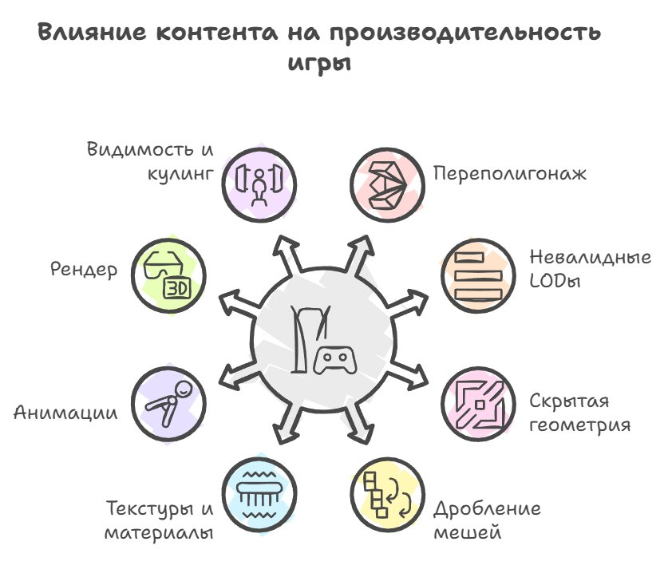
In generale, oltre ai programmatori che possono direttamente apportare modifiche al codice e rompere qualcosa — per esempio scegliendo un algoritmo pessimo o una allocazione di memoria da qualche parte in una funzione hot-path — le prestazioni possono essere fortemente influenzate anche dagli artisti, e in aggiunta da tutti coloro che producono contenuti per il gioco (modelli, texture, animazioni ed effetti visivi). Anche loro possono rompere un sacco di cose e influenzare drasticamente le perf. Per esempio, facendo un modello con un milione di poligoni dove ne sarebbero bastati diecimila (la classica storia dell'over-polygon), o appiccicando una texture pesante su un piccolo poligono, o nascondendo geometria invisibile dentro geometria visibile — e di conseguenza questo va tenuto d'occhio costantemente e in modo sistematico.
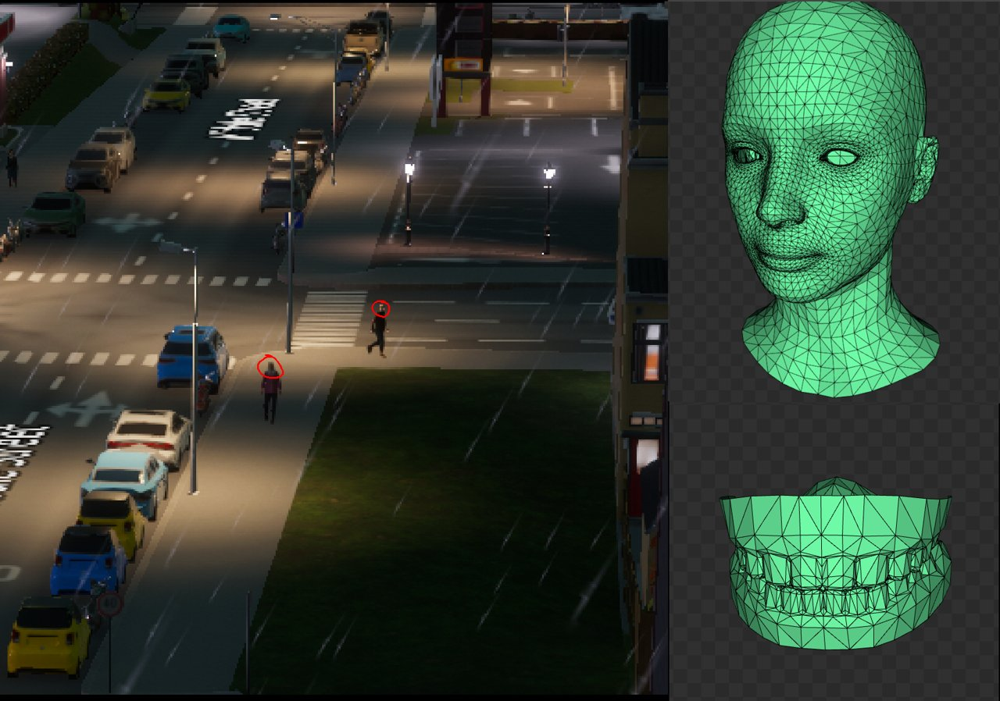
Artisti e designer hanno molti più modi per rovinare le cose.
Geometria
Numero eccessivo di poligoni — nessun LOD; densità troppo alta dove un oggetto occupa 20 pixel dello schermo.
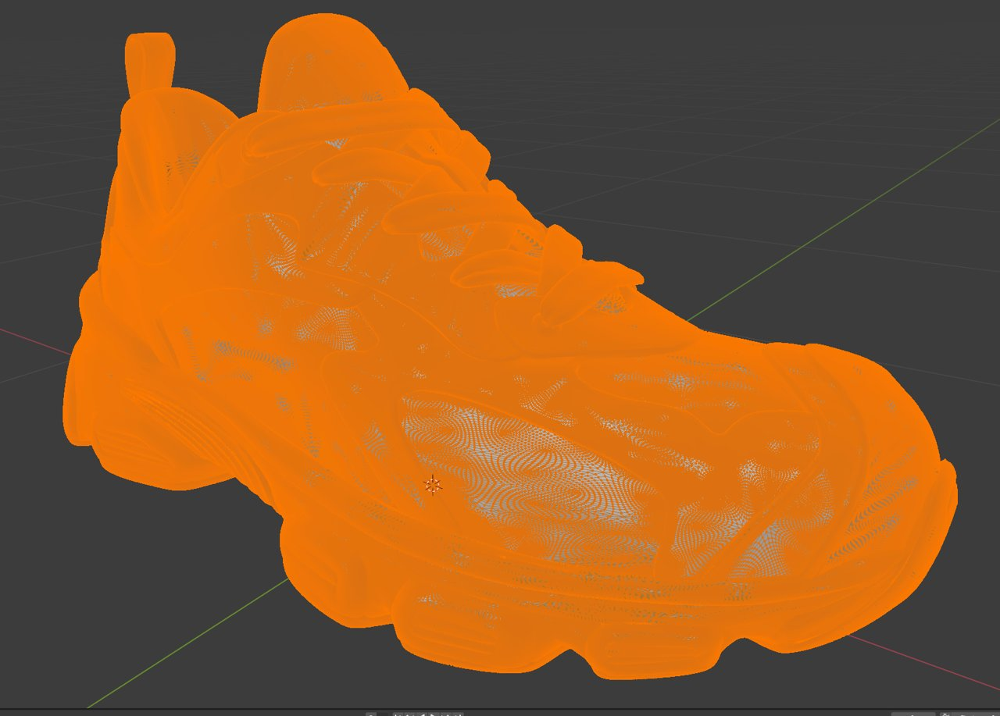
LOD non validi — cambiano troppo tardi; troppo pochi livelli di LOD.
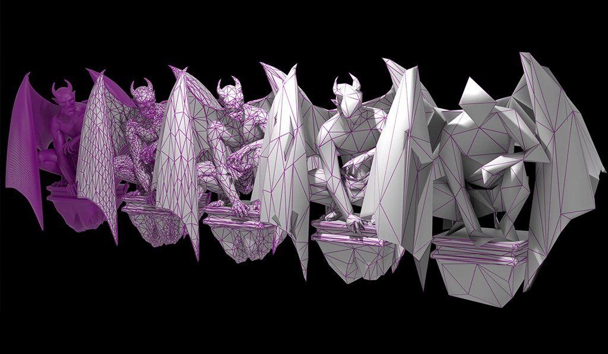
Geometria nascosta — mesh annidate; geometria sottoterra / dentro gli edifici; oggetti proxy dimenticati.
Frammentazione delle mesh — un solo oggetto visivo, ma decine di drawcall.
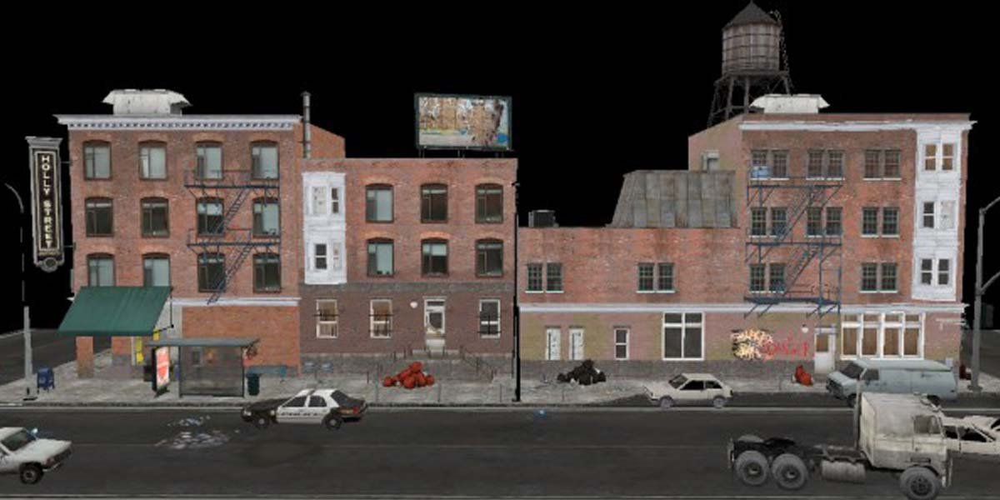
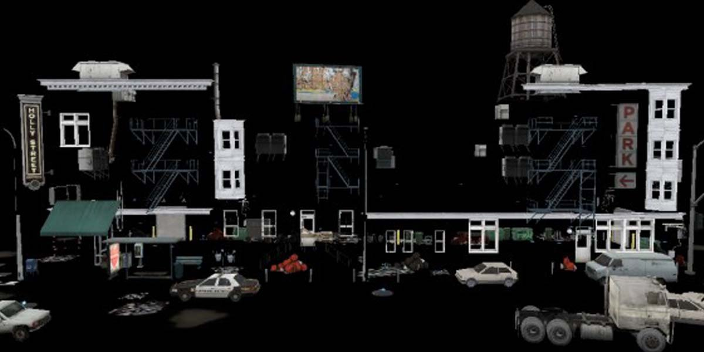
Texture e materiali
Texture sproporzionate rispetto alla dimensione sullo schermo — 4K su un oggetto grande come un'unghia; particolarmente doloroso per UI e decal.
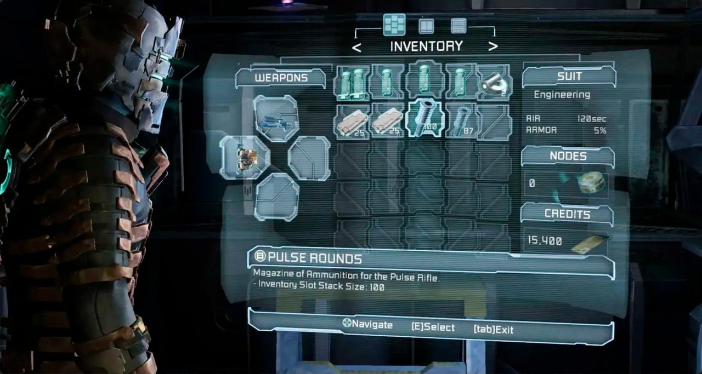
Mipmap mancanti o sbagliate — aliasing + cache thrash sulla GPU.
Materiali con uno shader pesante — PBR "di default" ovunque; branching dinamico nei pixel shader.
Inferno dei materiali — decine di materiali unici visivamente indistinguibili.
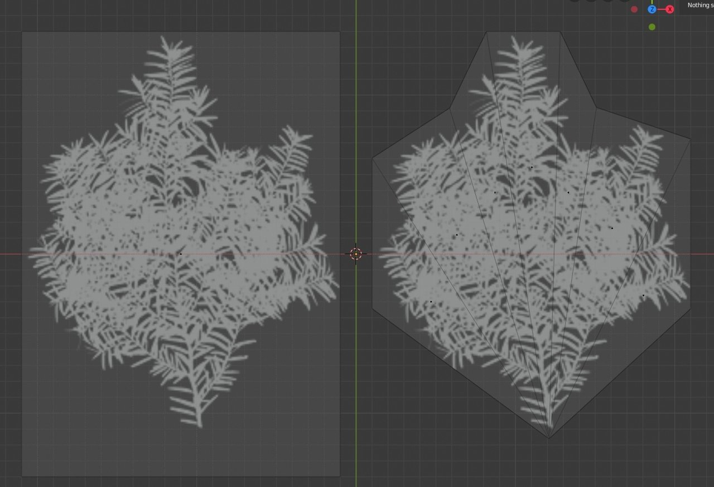
Animazioni — frequenza di campionamento dello scheletro troppo alta; scheletri con un numero eccessivo di ossa; animazioni che si aggiornano fuori dalla telecamera; blending senza limiti.
Render
- Particelle uniche per nebbia, UI, post-effetti (se non batchate)
- Trasparenza sopra trasparenza
- Effetti che non si spengono in base a distanza / qualità
- Shadow map troppo grandi
- Troppe sorgenti di luce che proiettano ombre
- Ombre dinamiche ovunque
Visibilità e culling
- Frustum / occlusion culling mancante o errato
- Aree di streaming con confini sbagliati
- Scene con l'idea "è sempre tutto caricato"
- Lunghi corridoi con trasparenza
- Spazi aperti senza occlusori naturali
- Una telecamera che guarda "tutto in una volta"
È importante che tutti coloro che lavorano al bene del progetto — inclusi non solo programmatori e artisti ma anche i game designer, e in effetti chiunque altro nel team — comprendano l'impatto delle proprie decisioni sulle perf (fps, grosso modo) e ne tengano traccia tramite profiling e testing. Perché se veniamo a sapere di un problema di prestazioni troppo tardi, quando il gioco è già finito o quasi finito, sistemarlo sarà molto difficile e costoso, e a volte del tutto impossibile, perché può richiedere un grande rifacimento, e non solo dei contenuti.
C'è una relazione "empirica" tra la velocità di correzione dei bug di contenuto e la loro età, ed è pari a 1,6-2x, cioè se un bug è stato trovato un giorno fa, allora ottimisticamente verrà corretto oggi-domani, una settimana fa — corrispondentemente la settimana prossima. C'è un tranello, però — puoi ottenere l'"effetto ultima settimana": "Ti avevo detto che l'avrei sistemato la settimana prossima. Perché me lo ricordi ormai da due mesi?" E se si tratta di un mese o più, allora la relazione diventa molto non lineare, e tornando al bug dei denti in CS2 — è stato trovato, secondo le voci, 2 mesi prima dell'uscita del gioco, poi il gioco è stato rimandato di altri tre mesi, ed è stato corretto tre mesi dopo il suo lancio.
Di conseguenza, affinché sia tutto a posto e non ci siano spiacevoli sorprese prima del rilascio, il performance testing viene avvicinato il più possibile all'hardware reale dei giocatori, incluse le configurazioni patata con requisiti di sistema minimi, sulle quali il gioco dovrebbe almeno in qualche modo girare a 30 fps.
Per gli artisti dovrebbero esserci anche strumenti specializzati che permettano a loro stessi di vedere come le prestazioni calano o non calano dopo le loro modifiche — alcuni contatori di alto livello come il numero di poligoni sullo schermo o il numero di drawcall, in modo da poter controllare le dimensioni delle texture e valutare se rientrano nel budget di memoria, e così via, vari parametri visivi come il numero di sorgenti di luce o la complessità degli shader.
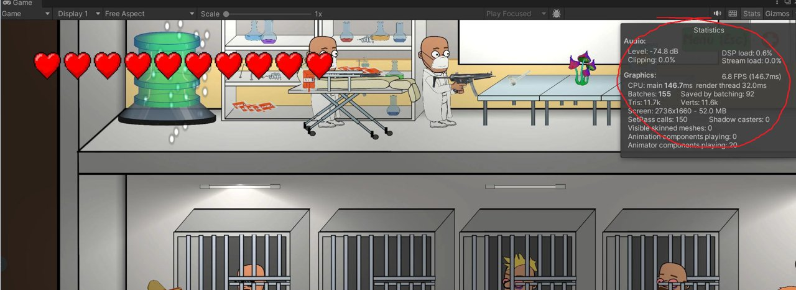
Drawcall
Nella comunità gamedev russofona il termine "drawcall" viene solitamente pronunciato come "dró-kolly" o "dró-koly" con l'accento sulla prima sillaba. Varianti meno comuni: "drav-kolly" — a volte incontrata, ma più raramente, e "vyzovy otrisovki" (letteralmente "chiamate di disegno") — una traduzione letterale, rara nel parlato e più nella documentazione, oppure la grafia inglese come standard comunemente accettato. E lasciate tutte quelle evocazioni "drow" e "draw" agli elfi, ai morlock e alle altre creature.
Col tempo gli studi si sono dotati di una disciplina di testing a sé stante — il performance QA, ovvero le persone che comprendono il codice del motore a livello di un buon mid e testano professionalmente le modifiche dei programmatori su varie configurazioni hardware, con vari settaggi di qualità grafica, e di conseguenza decidono poi se una nuova feature rientra nei budget di prestazioni stabiliti, e se possa essere trascinata più in là nel branch principale di sviluppo senza danneggiare le piattaforme target. Il PerfQA è spesso raggiunto dai programmatori del motore che non amano molto lavorare al motore, ma per i quali nemmeno il QA puro è interessante.
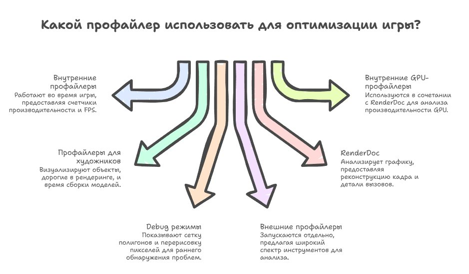
Per quanto riguarda i tipi di profiler — c'è un certo numero di strumenti diversi, e possono essere logicamente divisi in due grandi categorie: profiler interni integrati direttamente nel motore di gioco e funzionanti proprio durante il gameplay, inclusi vari performance counter, l'FPS corrente e il tempo speso nei vari sistemi, e quelli più specializzati per gli artisti, che mostrano visivamente quali oggetti sono i più costosi nel rendering, il tempo di costruzione dei modelli, il blending delle parti e così via.
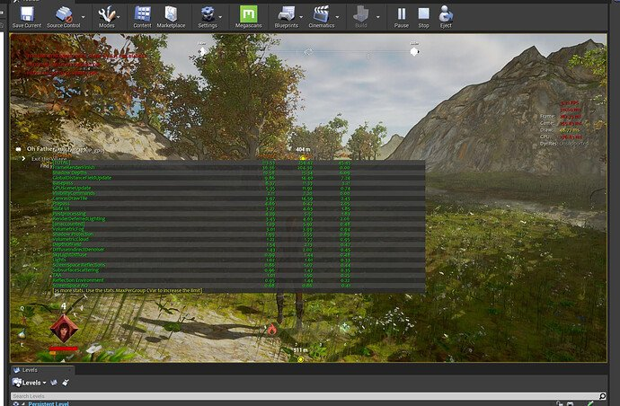
In generale, si può probabilmente considerare un "profiler" anche le varie modalità di debug rendering, come la modalità wireframe che mostra la mesh dei poligoni, o la visualizzazione dell'overdraw che mostra quante volte ogni pixel viene ridisegnato. Sono tutte cose che permettono di rilevare un problema in una fase precoce, identificarne la natura e correggerlo prima che finisca nel repo.
Ci sono profiler esterni che vengono lanciati separatamente dal gioco e vi si attaccano per raccogliere dati, e sono ben noti a tutti (Tracy, Pix, Razor, VTune, Optick, Dr, RGP, IGPA, ASP, Systrace, Perfetto). Anche quello integrato in Visual Studio può essere usato per il profiling, per vedere come e cosa è stato eseguito, quanto tempo ha impiegato ciascuna funzione, quanta memoria è stata allocata e così via.
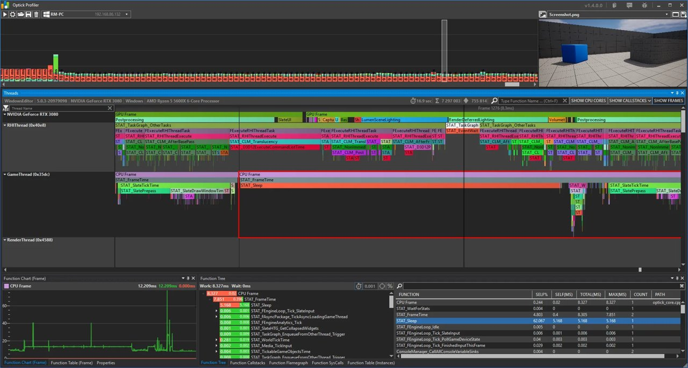
Per la GPU viene spesso menzionato RenderDoc, ed è davvero una potente mietitrebbia per l'analisi grafica, con cui si può vedere cosa stava succedendo sulla scheda video frame per frame, quali shader sono stati eseguiti, quali texture sono state usate, e scavare oltre nell'ottimizzazione del render. RenderDoc è essenzialmente il punto di partenza per qualsiasi discussione seria sul profiling della GPU, perché fornisce non numeri astratti ma una ricostruzione completa del frame, con la possibilità di guardare le singole chiamate e quanto tempo hanno impiegato.
Ma RenderDoc è prima di tutto uno strumento di analisi e debug, non un profiler classico nel senso di tempi e statistiche, e risponde perfettamente alle domande "cosa stiamo disegnando esattamente" e "in quale ordine", ma non risponde quasi alla domanda "quanto costa davvero in termini di tempo sull'hardware". Nel lavoro reale RenderDoc viene quasi sempre usato in tandem con profiler GPU interni o strumenti dei vendor come Nsight, che permettono di guardare il frame dal punto di vista dell'esecuzione sulla GPU: quanto tempo ha impiegato ciascuna chiamata, dove la grafica attende la CPU o viceversa, se siamo limitati dalla memoria — e in effetti solo questa coppia rende possibile combinare le timeline di CPU e GPU e vedere dove esattamente la CPU non riesce a stare al passo nell'alimentare la scheda video, e dove la GPU stessa diventa già il collo di bottiglia.
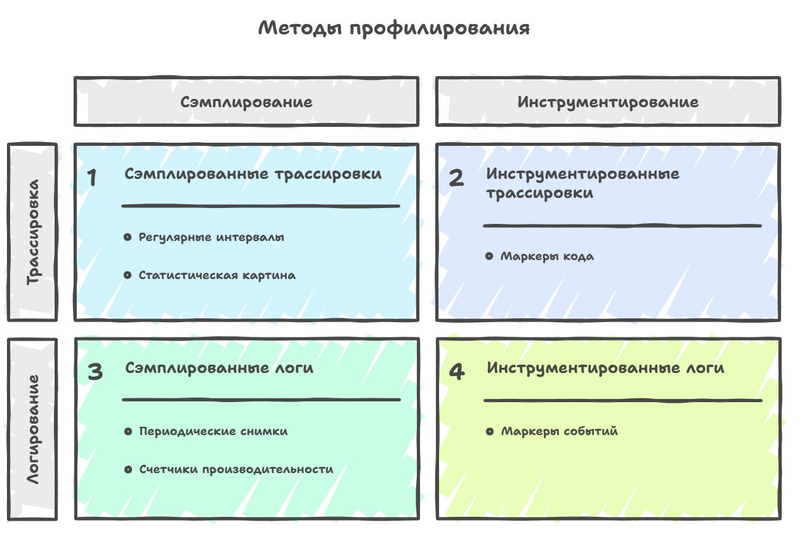
Tra i metodi di profiling più largamente usati nel gamedev, si possono individuare quattro approcci principali: sampling, instrumentation, tracing e logging.
Il primo è il profiling basato su campioni (sampling), un metodo in cui i dati sul lavoro di un'applicazione o di un gioco vengono raccolti a intervalli regolari — per esempio, ogni millisecondo il profiler ferma il programma e guarda quale funzione si sta eseguendo in quel momento, registra lo stack trace, e dopo aver accumulato abbastanza di questi campioni costruisce un quadro statistico di dove il programma ha speso più tempo. Di conseguenza, l'accuratezza dei dati che raccogliamo — grosso modo il livello di dettaglio del quadro che otteniamo alla fine — dipende da come abbiamo scelto questi intervalli e da quanto spesso facciamo la fermata.
Tempi di esecuzione delle funzioni:
• physics_update: 5 ms
• render_scene: 10 ms
• process_ai: 3 ms
• audio_update: 2 ms
Campioni totali raccolti: 52:
audio_update: 5 campioni (9.6%)
game_loop: 2 campioni (3.8%)
physics_update: 13 campioni (25.0%)
process_ai: 8 campioni (15.4%)
render_scene: 24 campioni (46.2%)Questo è uno dei suoi principali svantaggi, perché i profiler a sampling spesso "mentono" — cioè danno una bassa accuratezza per le funzioni veloci, e se una funzione si esegue in meno dell'intervallo di sampling, scartano del tutto quel campione, anche se in realtà viene chiamata migliaia di volte per frame e nel complesso occupa un tempo significativo.
Il problema delle funzioni veloci:
═══════════════════
Tempo: 0 100 200 300 400 500 600 700 800 ns
│ │ │ │ │ │ │ │ │
↓ ↓ ↓ ↓ ↓ ↓ ↓ ↓ ↓
[────────── process_particles ──────────][other_work]
└─────────── 500 ns ───────────┘└─ 300ns ─┘
Dentro il [f][f][f][f][f]...[f][f][f] (5000 chiamate)
processo: ↑ ↑ ↑ ↑ ↑ ↑ ↑ ↑
0.1ms ciascuno
fast_function (0.1 ms ciascuno):
│▪│▪│▪│▪│▪│▪│▪│▪│▪│▪│▪│▪│▪│▪│▪│▪│▪│▪│▪│▪│ ... (5000 pezzi)
Intervallo di sampling (2 ms):
▼ ▼ ▼ ▼
│ │ │ │
S₁ S₂ S₃ S₄
Probabilità di cadere IN una funzione:
0.1 ms / 2 ms = 5%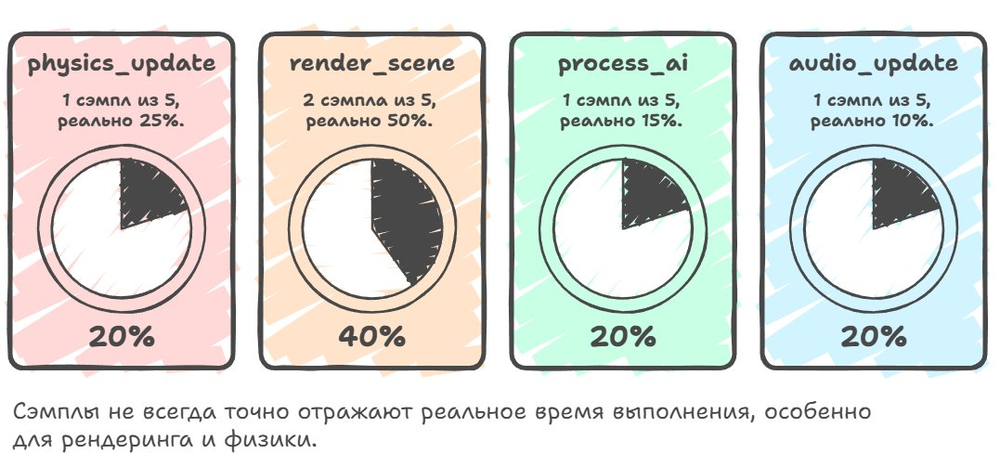
Può essere usato come fonte aggiuntiva di informazioni, ma spesso, per un confronto accurato delle prestazioni tra diverse versioni del codice, questo metodo non è adatto, perché i suoi risultati non si ripetono sempre e variano molto da run a run per la natura casuale del sampling.
LINEA TEMPORALE:
Tempo (ms): 0 2 4 6 8 10 12 14 16 18 20
│ │ │ │ │ │ │ │ │ │ │
↓ ↓ ↓ ↓ ↓ ↓ ↓ ↓ ↓ ↓ ↓
Esecuzione [physics][ render_scene ][AI ][ audio ]
reale: └─5ms──┘ └───────10ms───────┘└─3─┘└──2ms─┘
MOMENTI: ▼ ▼ ▼ ▼ ▼
di sampling: S₁ S₂ S₃ S₄ S₅
(ogni 2 ms)
TICK: [physics] [render] [render] [AI] [audio]
↑ ↑ ↑ ↑ ↑
"Ora in "Ora in "Ora in "Ora in "Ora in
physics" render" render" AI" audio"
Campioni totali: 5
physics_update: 1 campione (20%) ← In realtà era 25%
render_scene: 2 campioni (40%) ← In realtà era 50%
process_ai: 1 campione (20%) ← In realtà era 15%
audio_update: 1 campione (20%) ← In realtà era 10%In generale, il sampling funziona male con i sistemi multithread, perché quando hai otto thread che girano in parallelo su otto core, è molto difficile capire le relazioni di causa-effetto tra gli eventi nei diversi thread e vedere i problemi di sincronizzazione, come quando un thread attende il rilascio di un mutex tenuto da un altro thread. E il sampling viene usato perché è economico e non devi cambiare il codice del programma — tutte le informazioni necessarie si ottengono tramite il pdb e vengono parsate automaticamente dal profiler.
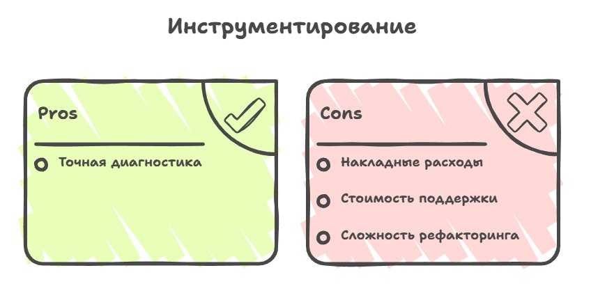
Il secondo metodo attivamente usato è il profiling strumentale, dove bisogna piazzare manualmente marker o macro speciali nel codice che registrano l'ora esatta di inizio e fine dell'esecuzione di ogni funzione o blocco di codice importante.
#define PROFILE_SCOPE(name) \
ProfileScope profile_scope_##__LINE__(name)
#define PROFILE_FUNCTION() \
PROFILE_SCOPE(__FUNCTION__)
// Classe RAII per begin/end automatici
class ProfileScope {
private:
const char* name;
public:
ProfileScope(const char* n) : name(n) {
g_profiler.begin_event(name);
}
~ProfileScope() {
g_profiler.end_event(name);
}
};
void physics_update() {
PROFILE_FUNCTION(); // ← Marker del profiler, registra il tempo in automatico
std::this_thread::sleep_for(std::chrono::milliseconds(5));
}
void render_scene() {
PROFILE_FUNCTION(); // ← Marker
std::this_thread::sleep_for(std::chrono::milliseconds(10));
{
PROFILE_SCOPE("RenderScene::DrawCalls"); // ← Marker annidato
std::this_thread::sleep_for(std::chrono::milliseconds(3));
}
}Qui il vantaggio principale è che questo metodo funziona magnificamente con i sistemi multithread, e puoi vedere quando ciascun thread ha fatto cosa, ed è facile rilevare problemi come un thread che sta inattivo in attesa di un altro thread o due thread che si contendono costantemente la stessa risorsa.
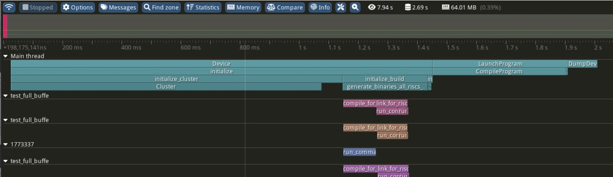
L'instrumentation è ben adatta non solo per l'hardcode ma anche per i linguaggi di scripting che i motori usano per descrivere la logica di gioco, e anche se hai un tuo linguaggio di scripting custom, puoi tranquillamente piazzare marker nell'interprete o nel compilatore e vedere cosa è successo a livello di script, quali funzioni di script hanno impiegato quanto tempo.
Ma bisogna capire il "prezzo" che paghiamo per l'accuratezza di tale profiling, e il primo prezzo è l'overhead a runtime. Se il profiler aggiunge dieci righe di codice per riga profilata, il gioco girerà almeno 10 volte più lentamente. I numeri reali naturalmente mostrano che il calo non è così critico, e in media perdiamo dal 10% al 20% di FPS profilando in questo modo. E possiamo anche minimizzare questo overhead tramite instrumentation selettiva, non mettendo marker su ogni funzione del progetto ma solo sui sistemi che contano davvero.
Il secondo prezzo è il costo di manutenzione, perché il tuo profiler è anch'esso codice, può avere anch'esso la propria infrastruttura e cambiare man mano che la codebase cresce, e spesso il secondo prezzo diventa molto più alto del primo una volta che nel progetto inizia il refactoring.
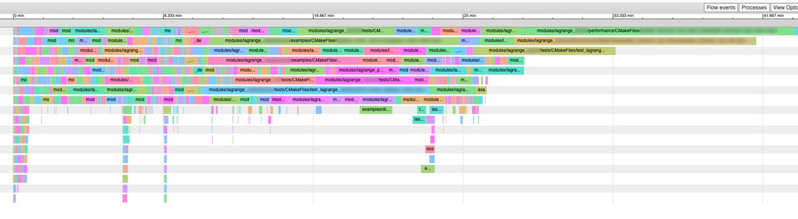
C'è un sottotipo di instrumentation chiamato tracing, dove viene raccolto un flusso di eventi nel tempo: l'inizio/fine dei task, i lock, le attese, i messaggi tra thread, le code di task — ma a differenza della classica raccolta di statistiche del profilo del frame, per esempio, che aggrega i dati, il tracing al contrario distende i dati nel tempo, preservando la cronologia. La cronologia degli eventi è spesso il momento chiave per comprendere il comportamento dei diversi sistemi, i grafi di task e le pipeline asincrone, ed è proprio per questo che strumenti moderni come Tracy, PIX, gli ETW trace assomigliano più a un oscilloscopio che a una tabella con le percentuali di esecuzione per funzione.
PROFILING AGGREGATO:
┌────────────────────────────────────────┐
│ Funzione │ Tempo │ % del frame │
├──────────────────┼────────┼─────────────┤
│ PhysicsUpdate() │ 4.2ms │ 25% │
│ RenderScene() │ 8.1ms │ 48% │
│ UpdateAI() │ 2.3ms │ 14% │
│ Other │ 2.1ms │ 13% │
└──────────────────┴────────┴─────────────┘
TRACING (linea temporale):
Thread 1: ████PhysicsUpdate████░░░░░░RenderScene██████████░░
Thread 2: ░░░░░UpdateAI░░░█████LoadTexture█████░░░░░░░░░░░░
Thread 3: ░░░░░░░░░░░░░░░░░░░░░ProcessAudio████░░░░░░░░░░░░
|----|----|----|----|----|----|----|----|----|----|
0ms 2ms 4ms 6ms 8ms 10ms 12ms 14ms 16ms 18ms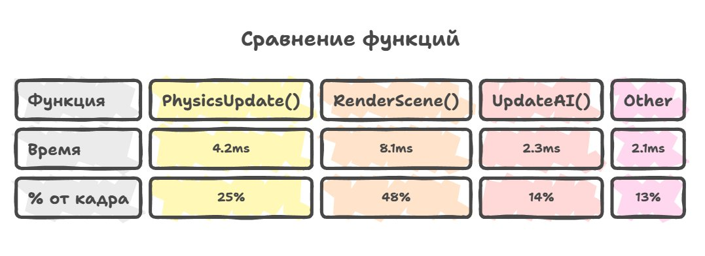
Se guardi nella direzione opposta rispetto al tracing, lì troverai il profiling event-based (logging), che è un parente del tracing ma si differenzia per un approccio fondamentalmente diverso a cosa esattamente misuriamo e a come interpretiamo i risultati.
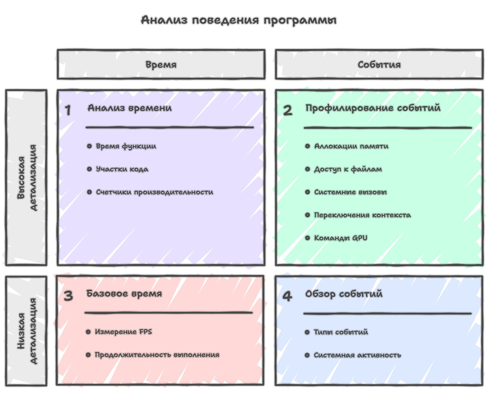
Se il profiling classico è focalizzato sulla misurazione di intervalli di tempo continui e risponde alla domanda "quanto tempo abbiamo speso in questa funzione o su questo pezzo di codice", il profiling event-based registra invece eventi discreti concreti che accadono nel sistema, come le allocazioni di memoria con indicata la dimensione e il punto nel codice, gli accessi al file system con informazioni su quale file è aperto e quanti byte vengono letti, le chiamate di sistema con i loro argomenti e risultati, le attese sulle primitive di sincronizzazione come mutex o semafori, i context switch tra thread con indicato il motivo del passaggio, l'invio di comandi alla GPU con informazioni dettagliate su quali risorse sono usate e quali shader sono lanciati, e una moltitudine di altri eventi che compongono la vita reale di un programma in esecuzione.
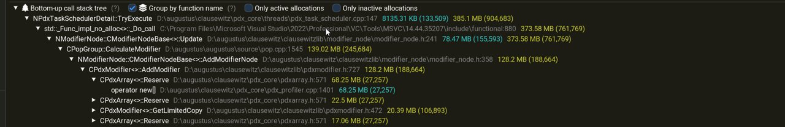
Storicamente l'approccio event-based si è sviluppato in parallelo con il mondo della programmazione di sistema e dei sistemi operativi, dove era richiesto comprendere cosa esattamente accade a livello del kernel dell'OS, quali processi e thread competono per le risorse, o perché avvengono i context switch e dettagli di basso livello simili, e permetteva di vedere le chiamate dell'OS con i loro argomenti e risultato senza il bisogno di ricompilare o riavviare.
Il gamedev, come al solito, ha sviluppato i propri strumenti di profiling specializzati, che inizialmente si concentravano sulla misurazione del tempo di esecuzione di funzioni e pezzi di codice ma gradualmente si sono evoluti verso un'analisi più dettagliata degli eventi, specialmente con la comparsa di architetture multithread complesse e la necessità di comprendere l'interazione di CPU e GPU. Strumenti generali come Intel VTune, che iniziarono come profiler a sampling, alla fine si trasformarono in potenti mietitrebbie di analisi delle prestazioni con supporto per il tracing degli eventi hardware del processore, il lavoro della pipeline grafica, il profiling grafico. In parallelo, profiler di gioco specializzati come Telemetry o Optick, che iniziarono con il tracing, aggiunsero componenti event-based e il sampling come complemento alla funzionalità principale.
La distinzione dell'approccio event-based è che ti permette di rispondere non tanto alla domanda "dove spendiamo tempo" quanto alla domanda più fondamentale "cosa sta effettivamente accadendo nel sistema, quando e perché", il che apre un livello un po' diverso di comprensione del comportamento del programma. In un profiler ordinario vedi che qualche funzione impiega molto tempo, ma non capisci perché esattamente è diventata lenta proprio in questo frame o proprio in queste condizioni, perché il profiler tradizionale ti mostra solo il tempo di esecuzione di questa funzione, mentre il quadro dettagliato di quali eventi di sistema esattamente stavano accadendo in quel momento rimane nascosto.
PROFILING TRADIZIONALE:
═══════════════════════════════════════════════════════════════
Frame #1042: 116.8ms (LENTO)
Albero delle chiamate:
├─ GameLoop() 16.8ms 100%
│ ├─ UpdatePhysics() 4.2ms 25%
│ ├─ UpdateAI() 110.3ms 61% LENTO!
│ │ ├─ PathFinding() 90.8ms 58% PERCHÉ COSÌ LENTO?
│ │ └─ BehaviorTrees() 0.5ms 3%
│ └─ Render() 2.3ms 14%E il profiling event-based risolve questo problema dando una cronologia dettagliata degli eventi, dove puoi vedere che in quell'esatto momento sono avvenute tre allocazioni di memoria per un totale di cinquanta megabyte, o si è verificato un page-in di memoria dal disco perché l'OS ha deciso di non avere abbastanza RAM libera, o è avvenuto un context switch verso un altro thread che era in attesa su un mutex.
PROFILING EVENT-BASED (semplificato):
═══════════════════════════════════════════════════════════════
Frame #1042: 116.8ms (LENTO)
Linea temporale con eventi:
0ms PathFinding() INIZIO
│
20.2ms ├─ EVENTO: Memory Alloc (15 MB, NavMesh data)
│ ↓ Innescato da: LoadNavigationData()
│ Posizione: pathfinding.cpp:142
│
20.8ms ├─ EVENTO: Memory Alloc (20 MB, A* open list)
│ ↓ Frammentazione dell'heap rilevata!
│ Posizione: pathfinding.cpp:187
│
30.1ms ├─ EVENTO: Memory Alloc (15 MB, path cache)
│ ↓ Totale allocato: 50 MB
│
3.5ms ├─ EVENTO: Page Fault (major)
│ ↓ L'OS fa swap dal disco!
│ Durata: 4.2ms
│ Motivo: Working set superato
│ Pagine in fault: 12,800
│
7.7ms ├─ EVENTO: Context Switch
│ ↓ Da: WorkerThread_2
│ ↓ A: System
│ ↓ Motivo: Page fault I/O completion
│ Durata: 1.8ms
│
9.5ms ├─ EVENTO: Mutex Wait
│ ↓ NavMeshMutex tenuto dal RenderThread
│ Durata: 0.3ms
│
9.8ms PathFinding() FINE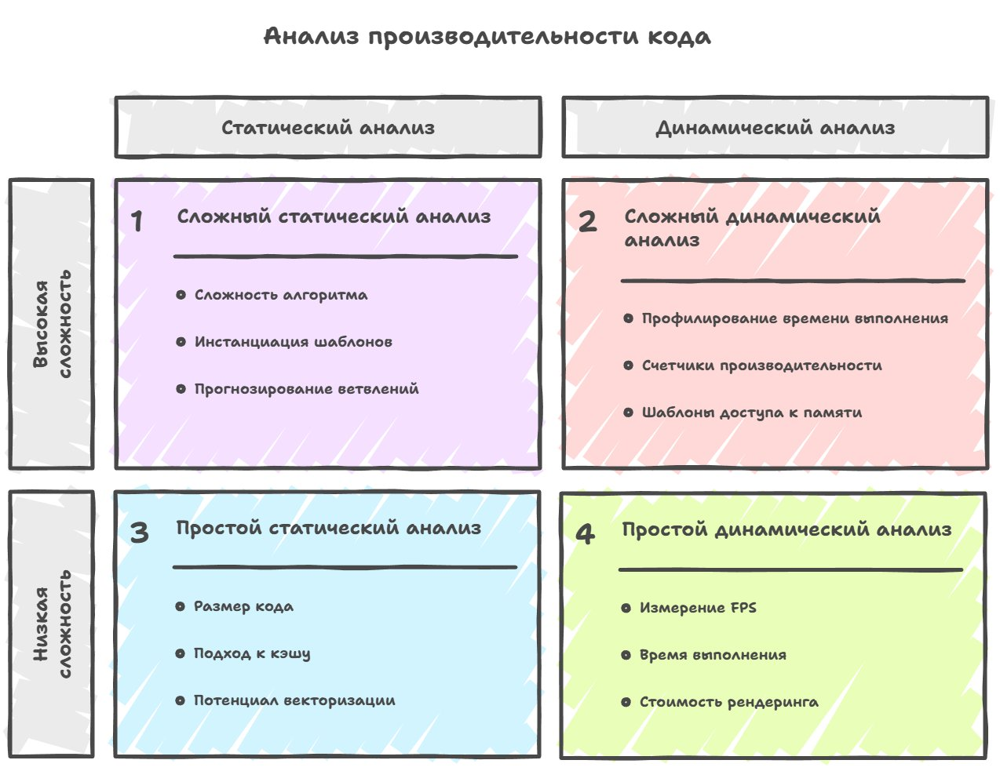
Passando all'approccio successivo, devi spostare abbastanza radicalmente la percezione del profiling nella tua testa, perché il profiling e l'analisi statica non sono affatto una misurazione del tempo di esecuzione del programma nel senso usuale del termine.
Rappresenta piuttosto un tentativo di valutare in anticipo i potenziali problemi di prestazioni analizzando il codice stesso e la sua struttura in fase di compilazione, prima che il codice inizi effettivamente a eseguirsi (johnnysswlab.com).
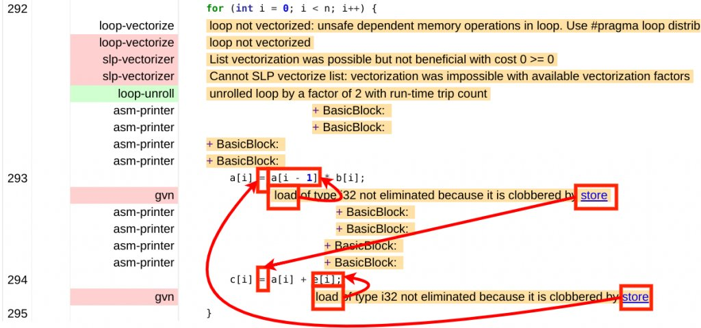
Questo può includere l'analisi della complessità teorica degli algoritmi con una valutazione del loro comportamento in termini di O grande, il conteggio del numero di istanziazioni di template nel codice, la misurazione della dimensione effettiva del codice compilato e la previsione di quanto bene si adatti alla cache delle istruzioni. Oppure l'analisi statica dei pattern di accesso alla memoria per prevedere possibili cache miss basandosi sulle caratteristiche note del processore target, la verifica della possibilità di vettorizzazione automatica dei loop da parte del compilatore e l'analisi del perché alcuni loop non vengono vettorizzati, la valutazione della complessità dei branch e la previsione di quanto bene il predittore gestirà la previsione di questi salti, e una moltitudine di altri aspetti che possono essere analizzati staticamente, o semplicemente trovare errori impliciti.
Storicamente l'idea dell'analisi statica delle prestazioni si è sviluppata in parallelo con lo sviluppo della teoria degli algoritmi e dei compilatori e ha radici molto profonde che risalgono ai primissimi giorni dei compilatori, il che ci ha portato alla comparsa dei compilatori ottimizzanti e ha aggiunto una nuova dimensione all'analisi del codice. I compilatori iniziarono non solo a tradurre il codice ma ad analizzarlo attivamente per applicare ottimizzazioni, e in effetti questi dati collaterali dai compilatori sull'analisi del codice divennero una fonte di informazioni aggiuntive su potenziali problemi di prestazioni che potevano essere estratti e presentati allo sviluppatore. Su questo sfondo iniziarono ad apparire analizzatori statici esterni, uno dei più noti dei quali divenne Cppcheck e PVS.
Cppcheck inizialmente non era uno strumento per l'ottimizzazione o l'analisi della generazione del codice ma si concentrava sulla ricerca di errori logici, undefined behavior e difetti nascosti nel codice C/C++. Tuttavia, con il suo sviluppo iniziò a usare un'analisi sempre più profonda della struttura del programma, incluso il codice template, il che lo portò inevitabilmente in un'area che si sovrappone ai problemi di scalabilità e complessità del codice.
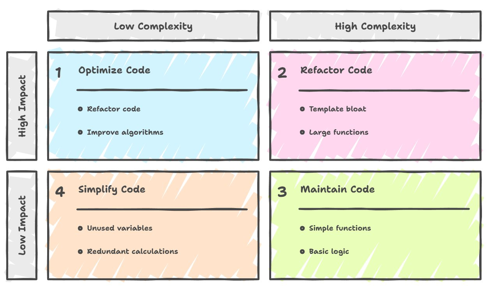
In particolare, l'analisi dei template ha messo in luce un'intera classe di problemi legati alla loro compilazione e uso: dalle istanziazioni ridondanti al code bloat non ovvio, che formalmente non sono errori ma influenzano direttamente il tempo di build, la dimensione del binario e indirettamente le prestazioni. Queste osservazioni non erano uniche di Cppcheck, ma furono proprio strumenti del genere a rendere tali effetti visibili agli sviluppatori, mostrando che i problemi di prestazioni possono avere origine molto prima della fase di esecuzione del programma, a livello della struttura del codice sorgente e della sua interazione con il modello di compilazione. Mostrerò alcuni problemi dei template che possono essere rilevati da una semplice analisi del codice sorgente.
Il primo sono le istanziazioni multiple, quando ogni unità di traduzione viene compilata indipendentemente, e se due diversi file cpp usano lo stesso template con gli stessi parametri, il compilatore crea una copia del codice istanziato in ciascun file oggetto separatamente, e solo in fase di linking questi duplicati verranno trovati e rimossi — ma questo aumenta il tempo di compilazione e la dimensione dei file oggetto intermedi.
Il secondo sono le istanziazioni quasi-duplicate, quando il codice di diverse istanziazioni è praticamente identico, ma il compilatore è costretto a memorizzarle come copie separate a causa di differenze formali nei parametri del template, e l'esempio classico è vector<int*> e vector<double*>, dove i puntatori hanno la stessa dimensione e la stessa rappresentazione in memoria su qualsiasi piattaforma, quindi il codice macchina generato per entrambe le versioni sarà assolutamente identico, ma il compilatore crea e memorizza comunque due copie separate.
Il terzo è una fonte di inlining eccessivo negli header, quando anche piccoli metodi di classi template, che nel caso di classi ordinarie avrebbero potuto essere spostati in file cpp separati, finiscono nei file header, e il compilatore li inlina aggressivamente in tutti i punti d'uso, il che moltiplica la dimensione del codice.
Ma qui bisogna capire che il profiling statico non sostituisce l'ordinario profiling con i vari metodi e non dovrebbe affatto essere considerato un'alternativa a pieno titolo, perché il comportamento reale di un programma dipende da un numero molto grande di fattori dinamici che è impossibile prevedere.
Ma l'analisi statica funziona in modo eccellente come filtro precoce e strumento di apprendimento, per identificare ed eliminare problemi ovvi in fase di sviluppo, prima che il codice finisca nel binario. Aiuta anche a spiegare "perché" alcuni punti sono potenzialmente costosi in termini di prestazioni ancora prima di lanciare il profiler e misurare il tempo di esecuzione effettivo.
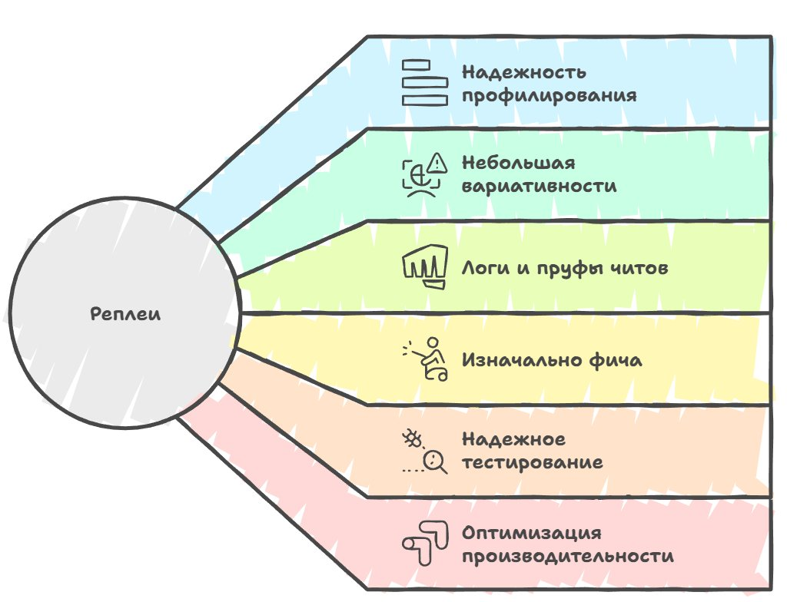
E l'ultima area separata di profiling sono i replay, che rappresentano non tanto un tipo separato di profiling quanto la possibilità di rendere qualsiasi profiling molto più affidabile e utile.
L'essenza dell'approccio è che i motori di gioco usano la tecnica di registrare l'input del giocatore o lo stato completo del mondo di gioco in certi momenti nel tempo, con la successiva riproduzione di questa registrazione. Questo permette di far girare di nuovo e di nuovo una sequenza di eventi assolutamente identica, acquisendo la capacità di confrontare diverse versioni del codice o diverse ottimizzazioni in condizioni identiche e rimuovere la variabilità dei risultati dovuta alla casualità dell'esecuzione sull'hardware. C'è un punto per cui il replay è così importante per misurare le perf — il gameplay reale è così variabile e dipendente dalle azioni del giocatore che ottenere misurazioni ripetibili è praticamente impossibile; anche se un QA super-allenato fa tutto perfettamente, ci saranno comunque micro-deviazioni nelle azioni che portano a un comportamento dissimile all'interno del gioco.
Storicamente, i sistemi di replay si sono sviluppati nell'industria dei giochi per ragioni indipendenti, e solo col tempo il loro valore per il profiling e l'ottimizzazione è diventato ovvio e applicato consapevolmente.
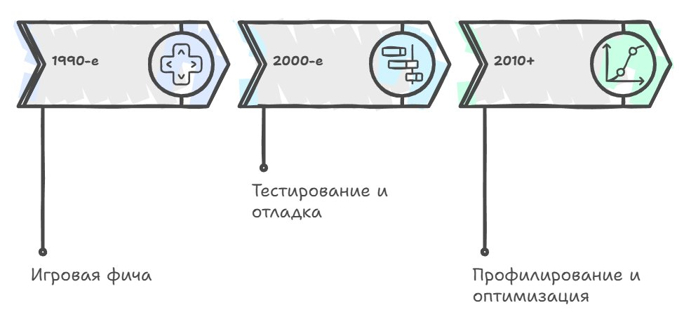
Inizialmente i sistemi di replay comparvero come una feature di gioco, così che i giocatori potessero rivedere e analizzare le loro partite, e l'esempio classico qui sono i vecchi giochi RTS come StarCraft e Warcraft, che salvavano non una registrazione video del gioco ma la sequenza dei comandi dei giocatori, permettendo di riprodurre esattamente l'intera partita usando una quantità minima di dati.
In parallelo a questo, i sistemi di replay venivano usati nel testing e nel debugging come modo per riprodurre bug difficili da catturare con il debugging ordinario, specialmente quelli legati a casi rari nel codice multithread o a una certa sequenza di azioni del giocatore. E solo relativamente di recente, forse a partire dalla fine degli anni 2000 quando l'ottimizzazione delle prestazioni divenne abbastanza importante per i giochi AAA che giravano su console con risorse limitate, gli sviluppatori iniziarono a usare sistematicamente i replay per il profiling e il confronto delle prestazioni di diverse versioni del codice.
L'idea chiave del profiling deterministico è garantire la riproducibilità delle azioni, perché senza riproducibilità qualsiasi confronto di prestazioni diventa, come si dice, "forconi sull'acqua" e può essere fuorviante. Immagina di aver ottimizzato qualche sistema nel motore, di aver lanciato il gioco e di aver misurato che le prestazioni sono migliorate del quindici percento, ma non puoi essere sicuro che questo sia un miglioramento reale dovuto all'ottimizzazione introdotta, perché questa volta il giocatore si è mosso lungo un percorso leggermente diverso, sono state caricate aree diverse del mondo, i nemici casuali sono spawnati in posti diversi, e mille altri fattori hanno creato un carico leggermente diverso sul sistema.
E con un replay puoi far girare uno scenario completamente identico prima e dopo l'ottimizzazione, e ogni frame elaborerà esattamente gli stessi dati nello stesso ordine, e qualsiasi differenza nelle prestazioni sarà garantita di essere spiegata solo da cambiamenti nel codice, non dalla variabilità del gameplay.
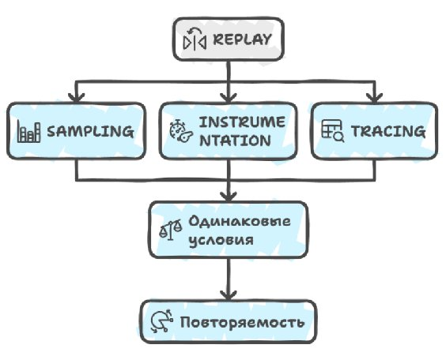
Il profiling stesso quando si usa un replay può essere assolutamente qualsiasi cosa, sia esso il sampling che raccoglie statistiche sui tempi di esecuzione delle funzioni, o l'instrumentation che misura il tempo esatto di ingresso e uscita dalle funzioni, o il tracing che registra tutti gli eventi significativi nel sistema, ma il fattore chiave qui diventa proprio la riproducibilità delle condizioni, che permette di fare confronti e conclusioni affidabili.
L'implementazione pratica dei replay nei moderni motori di gioco è solitamente divisa in diversi livelli di dettaglio, dove al livello più basilare puoi registrare solo l'input del giocatore, come le pressioni dei tasti e il movimento del mouse con timestamp precisi, e riprodurli in un simulatore deterministico, garantendo che con lo stesso input ottieni sempre lo stesso stato del mondo. A un livello più avanzato puoi registrare lo stato completo del mondo di gioco in momenti chiave nel tempo, creando snapshot da cui può iniziare la riproduzione, il che dà una flessibilità molto maggiore e permette di avanzare rapidamente ai momenti di interesse senza riprodurre l'intera sessione dall'inizio. E al livello più dettagliato i motori registrano letteralmente tutto, inclusi i risultati di tutti gli accessi al file system, i pacchetti di rete, la generazione di numeri casuali e persino le chiamate di sistema, creando un ambiente di esecuzione completamente isolato e deterministico che garantisce l'assoluta riproducibilità di qualsiasi comportamento del programma.
Un tracing profiler
Se guardi il design di un tracing profiler usato nei moderni motori di gioco, ci sono molti requisiti per esso, ma la maggior parte di essi è legata all'utente finale: programmatori, artisti, tester delle prestazioni, designer di NPC e di suono, tutti hanno bisogno del proprio specifico set di dati e del proprio modo di presentarli — ma se scendiamo al livello dell'architettura di base, sarà solitamente implementato tramite un sistema di macro del preprocessore C++. Questo può sembrare un approccio all'antica, ma in pratica dà la capacità, tramite flag di compilazione, di accendere o spegnere interi aspetti del profiling a seconda della configurazione di build.
┌──────────────────────────────────────────────────────────┐
│ #define PROFILING_ENABLED 1 │
│ #define PROFILING_LEVEL_FULL │
│ │
│ PROFILE_SCOPE("Physics") ──> [registra tutti i dati] │
└──────────────────────────────────────────────────────────┘
┌──────────────────────────────────────────────────────────┐
│ #define PROFILING_ENABLED 1 │
│ #define PROFILING_LEVEL_BASIC │
│ │
│ PROFILE_SCOPE("Physics") ──> [metriche di base] │
└──────────────────────────────────────────────────────────┘
┌──────────────────────────────────────────────────────────┐
│ #define PROFILING_ENABLED 0 │
│ │
│ PROFILE_SCOPE("Physics") ──> [rimosso completamente] │
│ [nessun codice] │
│ Overhead: (nessuno) │
└──────────────────────────────────────────────────────────┘
MACRO DEL PREPROCESSORE ALTRI MECCANISMI DEL LINGUAGGIO
═════════════════════ ══════════════════════
if (PROFILING_ENABLED) { if (config.profiling) {
[codice di profiling] [codice di profiling]
} }
▼ ▼
┌───────────────────┐ ┌───────────────────┐
│ Release: │ │ Release: │
│ [vuoto] │ │ if (false) { │
│ │ │ [codice morto] │
│ │ │ } │
│ Overhead: │ │ Overhead: │
│ 0 byte │ │ + il controllo if │
│ 0 istruzioni │ │ + codice morto │
│ │ │ + dim. binario │
└───────────────────┘ └───────────────────┘Nella versione release del gioco puoi disabilitare completamente il profiling del tutto con una singola direttiva, e purtroppo nessun altro meccanismo del linguaggio ti permette di fare qualcosa di simile, e ci sarà overhead ovunque, anche se minimo.
Poi viene il layer dati dei profiler, perché ci sono vari processori di dati che sanno come gestire i dati raccolti e dove emetterli, e questi possono essere sistemi completamente diversi.
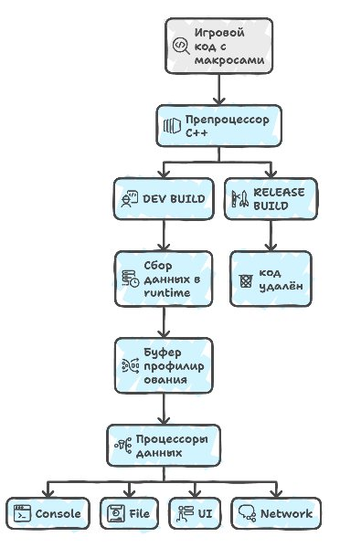
Puoi emettere sulla console per gli artisti un set minimale di dati come l'FPS corrente, o il numero di drawcall e la quantità di memoria usata per i programmatori, così da poter vedere l'impatto delle loro modifiche in tempo reale.
Un'architettura zero-allocation
Se sbirci più a fondo dentro l'implementazione del profiler, qui salta fuori un punto molto importante: il profiler non può fare allocazioni dinamiche durante il suo lavoro (non farle affatto — questo si chiama architettura alloc-free), cioè l'intero pool di memoria necessario viene allocato in anticipo all'inizializzazione, e tutti questi oggetti vengono creati in anticipo e aspettano solo di essere usati. Può naturalmente farle, ma allora tutti i risultati iniziano a driftare, perché la malloc stessa drifta parecchio durante l'allocazione.
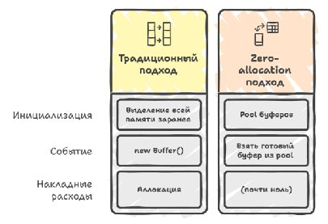
Se provi a liberarti di tutte (tutte, Carl) le allocazioni, a un certo punto arriverai al concetto di buffer (un buffer provider), quando hai un set di buffer di dimensione fissa che sono pre-allocati e impilati in code, e di conseguenza vari writer per questi buffer: per eventi di CPU, GPU, IO, fisica, AI e così via — il loro compito è prendere buffer liberi da questa coda e scriverci dentro i dati sugli eventi che accadono man mano che accadono.
Poi, non appena arriva il momento di raccogliere i dati da questi buffer, vengono marcati come pronti per l'elaborazione e spostati in un'altra coda, così che i processori di dati possano poi richiederli ed elaborarli, e a ogni writer viene dato il proprio parser specializzato che sa come estrarre il flusso di eventi dal buffer, già a livello di interpreti dei dati utente, per farci qualcosa, sia esso la visualizzazione su una timeline o l'aggregazione di statistiche.
Ora, per pilotare questi buffer e parser, devi fare un altro sistema — un dispatcher di dati che gira su tutti i processori di dati registrati che vogliono elaborare eventi e chiama sequenzialmente i loro metodi di elaborazione.
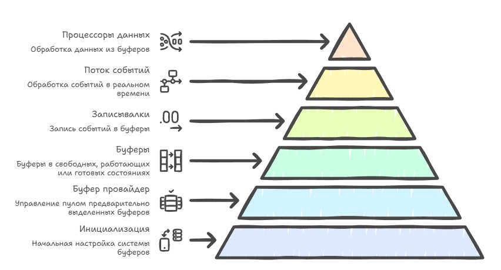
Non appena tutti i dati sono elaborati restituisce i buffer al pool per il riutilizzo, il che in linea di principio ti permette di non fare alcuna allocazione, di non preoccuparti dei leak e di lavorare in modo veloce ed efficiente, se vuoi raccogliere più di 100k eventi per frame a un fps accettabile.
String handle
E quando ti avvicini a raccogliere circa 100k eventi per frame, ti imbatti in un problema, perché le stringhe smettono di funzionare, sia statiche che dinamiche. Se quelle statiche in qualche modo se la cavano ancora, quelle dinamiche ammazzano le perf di netto, quindi il profiler usa molto attivamente gli string handle per i nomi di funzioni, file, eventi e tutto il resto.
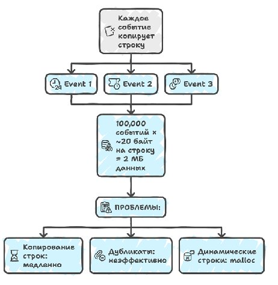
Non vogliamo nemmeno scrivere le stringhe direttamente nel flusso di eventi, perché possono essere molto lunghe (qualsiasi cosa più lunga di 80 caratteri è lenta e costosa da scrivere), possono essere ripetute molte volte in eventi diversi, e hanno lunghezza variabile, il che aggiunge problemi anche per il parser dei dati binari. Ma dato che la maggior parte delle stringhe ci arriva dal binario stesso, possiamo memorizzare direttamente un puntatore a quella stringa come numero a 64 bit, e questo funzionerà benissimo, perché la stringa è garantita di esistere per tutta la vita del programma — cioè sì, qui violiamo diversi principi della scrittura di una buona architettura in una volta sola, ma se hai bisogno di raccogliere più di 100k eventi con descrizioni, dovrai ricorrere a qualche hack.
BINARIO (.exe/.dll) EVENTI NEL BUFFER
════════════════════ ════════════════
┌─────────────────────┐ ┌──────────────────┐
│ sezione .rodata │ │ Evento 1: │
│ │ │ timestamp: 123 │
│ 0x00401000: │<───────────────│ name_ptr: │
│ "Physics::Update" │ puntatore │ 0x00401000 │
│ │ │ durata: 42 │
│ 0x00401010: │ └──────────────────┘
│ "Render::DrawCall" │<───┐ ┌──────────────────┐
│ │ │ │ Evento 2: │
│ 0x00401020: │ │ │ timestamp: 156 │
│ "AI::Think" │ │ puntatore │ name_ptr: │
│ │ └───────────│ 0x00401000 │
└─────────────────────┘ │ durata: 38 │
▲ └──────────────────┘
│ ┌──────────────────┐
Le stringhe esistono per │ Evento 3: │
tutta la vita del programma │ timestamp: 189 │
Validità garantita │ name_ptr: │
│ 0x00401010 │
│ durata: 12 │
└──────────────────┘Questo non funziona sempre, perché a volte servono comunque stringhe dinamiche, create durante l'esecuzione del programma — per esempio i nomi degli oggetti di gioco o i messaggi formattati. Per questo si usano gli handle, che vengono messi in un buffer separato dove vengono memorizzate tutte le stringhe dinamiche uniche, e l'indirizzo viene di nuovo preso da lì. La maggior parte delle stringhe è comunque statica, quindi questo funziona perfettamente veloce e risparmiamo tempo sulla copia delle stringhe.
CREAZIONE A RUNTIME: BUFFER DEGLI STRING HANDLE
(un buffer separato)
┌──────────────────┐ ═══════════════════
│ Codice di gioco: │
│ │ ┌─────────────────────┐
│ sprintf(buf, │ │ 0x10000000: │
│ "Enemy_%d", id) │────────────>│ "Enemy_42" │
│ │ aggiungi │ │
└──────────────────┘ se è nuovo │ 0x10000010: │
│ "Player_John" │
┌──────────────────┐ │ │
│ Codice gameplay: │ │ 0x10000020: │
│ │────────┐ │ "Level_3_Boss" │
│ entity.getName() │ │ │ │
│ │ │ │ 0x10000030: │
└──────────────────┘ │ │ "Enemy_42" │<─┐
│ └─────────────────────┘ │
│ ▲ │
│ ┌───────┴────────┐ │
└───>│ Hash Table: │ │
│ "Enemy_42" │───────┘
│ → 0x10000000 │
│ Deduplicazione │
└────────────────┘E in linea di principio questo è sufficiente per scrivere un profiler al livello di Tracy o Pix e iniziare a usarlo — sto parlando della parte CPU in questo momento, perché con la GPU è tutto sia più difficile che più facile allo stesso tempo, ma di quello un'altra volta.
Quindi qual è la conclusione...
Alla fine siamo arrivati al fatto che il profiling moderno è un sistema multi-livello, e ogni dettaglio dell'architettura è stato scritto con sangue, sudore e fps bassi. Dalla scelta tra sampling, instrumentation e tracing all'implementazione di un'architettura zero-allocation con pool e stringhe-che-non-sono-stringhe — tutte queste decisioni sono mirate a ottenere il quadro più accurato possibile delle prestazioni senza influenzare le prestazioni stesse, il che è molto, molto difficile da fare. Il percorso dalla semplice misurazione dell'FPS nei primi motori alle mietitrebbie al livello di Tracy e PIX, capaci di elaborare quasi tutto quello che vuoi, mostra come questi sistemi si siano evoluti da feature di gioco e strumenti di debug in soluzioni autonome per l'ottimizzazione. E tutto questo è cresciuto non solo in strumenti di debug ma in un'infrastruttura a sé stante, senza la quale lo sviluppo di giochi perderebbe sia in velocità di sviluppo che nelle scadenze.
← Tutti gli articoli